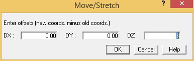
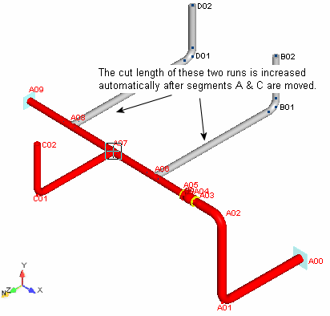
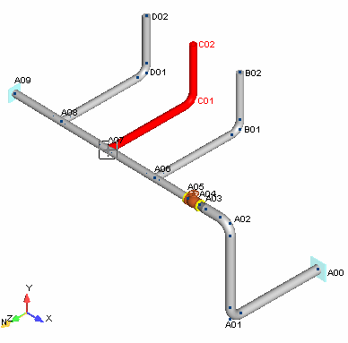
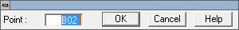
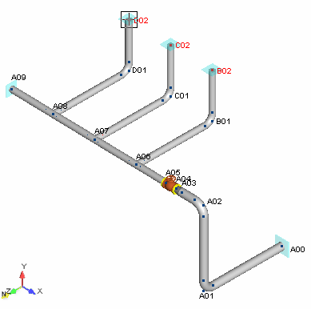

Select Home > Operations > Move/Stretch.
- The Move/Stretch dialog is displayed.

In this dialog you will specify that the selected range is to be moved 6 feet {2000mm} in the Z direction. Tab twice to the DZ field and input 6 {2000} as shown above. Press OK to close the dialog.
- The model appears as shown in the following figure. Notice that the cut lengths along segments B and D automatically stretched along with the selection that was moved.

.png) 9. Select Home >
Clipboard > Undo to return the selected range to the
previous position. Select Home > Clipboard >
Undo again to return Segment C to the opposite side of the
main pipe run. The model appears as shown in the following
figure.
9. Select Home >
Clipboard > Undo to return the selected range to the
previous position. Select Home > Clipboard >
Undo again to return Segment C to the opposite side of the
main pipe run. The model appears as shown in the following
figure.

- Choose Select > Selection > Clear to clear the selection set.
- Now we will demonstrate how selection sets can be used to insert multiple components
simultaneously. Previously, we created a selection set that defined a range of components. In this exercise, you will create a selection set of points. Choose Select > Selection > Point. The control dialog shown below is displayed.

- With the control dialog displayed, select the following points: D02, C02, B02. All three point names are highlighted.
-
.png) Press OK in
the control dialog, then select Insert > Supports >
Anchor/NodeLink.
Press OK in
the control dialog, then select Insert > Supports >
Anchor/NodeLink. - The Anchor/NodeLink dialog is displayed. Press OK to accept the defaults, an anchor will be placed at each of the selected points. The model appears as shown in the following figure.
